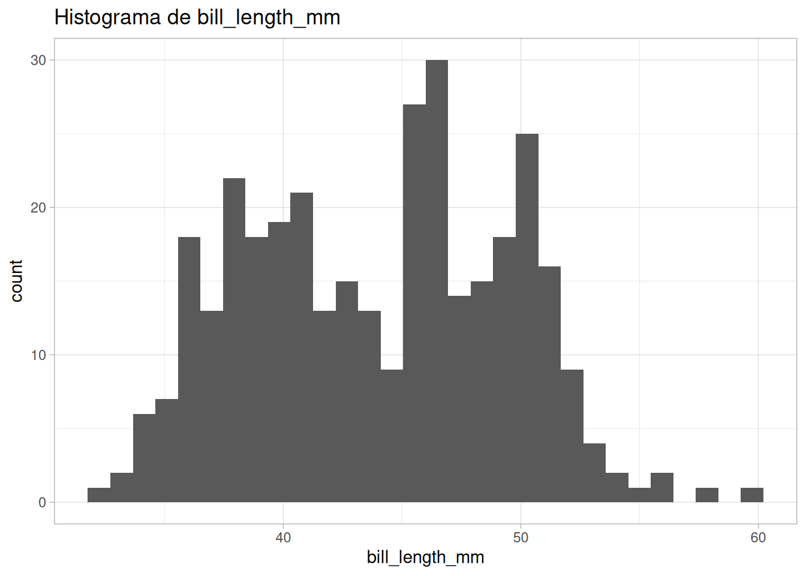

A programação funcional é um paradigma de programação que se concentra em funções e em como elas são usadas para resolver problemas1.
Utilizar funções tem várias vantagens, como:
Evitamos copiar e colar o mesmo código (ou muito parecido) várias vezes. Isso faz com que o código seja mais fácil de manter e de entender, e também diminui a chance de erros.
Podemos reutilizar o código em diferentes partes do programa.
Até, nós temos utilizado as funções existentes (do R e de pacotes) para realizar tarefas específicas.
Mas e se quisermos criar nossas próprias funções, para facilitar a execução de tarefas repetitivas?
Nesta aula, vamos aprender a criar nossas próprias funções!
Vamos carregar os dados dos voos (utilizado na aula anterior) para utilizarmos como exemplo:
ℹ Using "','" as decimal and "'.'" as grouping mark. Use `read_delim()` for more control.
Rows: 82003 Columns: 26
── Column specification ────────────────────────────────────────────────────────
Delimiter: ";"
chr (17): nm_empresa, ds_di, ds_grupo_di, ds_natureza_etapa, dt_partida_rea...
dbl (5): id_basica, id_empresa, id_aerodromo_origem, dt_chegada_real, id_a...
dttm (1): dt_sistema
date (1): dt_referencia
time (2): hr_partida_real, hr_chegada_real
ℹ Use `spec()` to retrieve the full column specification for this data.
ℹ Specify the column types or set `show_col_types = FALSE` to quiet this message.
Caso tenha dificuldades em carregar os dados, você pode carregar o arquivo diretamente da internet:
Já vimos que o R possui várias funções embutidas, como mean(), sum(), sd(), entre outras. Também já utilizamos funções de pacotes, como dplyr::filter() e ggplot2::ggplot().
Mas e se quisermos criar nossas próprias funções?
7.2.1 Estrutura básica de uma função
As funções no R são criadas com a função function(), e tem a seguinte estrutura básica:
nome_da_funcao <-function(argumento1, argumento2, ...) {# Corpo da função# Aqui, escrevemos o código que a função irá executar}
Uma forma que facilita o processo de criação de funções é pensar em pequenas tarefas que podem ser agrupadas em uma função. Assim, a função se torna mais fácil de entender e de testar.
Por exemplo, na aula de relatórios com Quarto, utilizamos a função knitr::combine_words() para combinar palavras em uma frase. Se quisermos criar uma função que faça isso, poderíamos seguir os seguintes passos:
Início da função combinar_palavras(). A função recebe um argumento chamado vetor_de_palavras.
2
O argumento vetor_de_palavras é utilizado como argumento para a função unique() para obter as palavras únicas do vetor de palavras.
3
As palavras únicas são combinadas utilizando a função knitr::combine_words(). Neste caso, estamos utilizando o argumento and para separar as palavras e oxford_comma para definir se queremos a vírgula de Oxford.
4
O resultado da função é a variável palavras_combinadas.
5
Fim da função combinar_palavras().
Com a função criada, podemos experimentá-la:
# Experimentando com um vetor de palavrascombinar_palavras(c("R", "Python", "SQL"))
R, Python e SQL
# Experimentando com um vetor de palavras, com palavras repetidascombinar_palavras(c("R", "Python", "SQL", "R"))
R, Python e SQL
# Experimentando com uma coluna de um data framecombinar_palavras(voos$sg_uf_origem)
NA, SP, RJ, SC, PE, CE, MG, AM, MT, DF, PR, PA, ES, RS, AC, BA, SE, GO, PB, RN, AL, AP, MS, PI, RR, MA, TO e RO
# O que acontece quando tentamos chamar a função sem argumentos?combinar_palavras()
Error in combinar_palavras(): argumento "vetor_de_palavras" ausente, sem padrão
No exemplo acima, podemos observar que:
Nome da função: Criamos uma função chamada combinar_palavras(). Utilizamos o operador <- para atribuir a função a um objeto chamado combinar_palavras.
A função recebe um argumento chamado vetor_de_palavras. Este argumento é o que vamos passar para a função quando quisermos utilizá-la.
O valor passado no argumento vetor_de_palavras é substituído no corpo da função para realizar as operações desejadas.
Podemos utilizar funções existentes dentro de outras funções. No exemplo, utilizamos a função unique() para obter as palavras únicas e a função knitr::combine_words() para combinar as palavras.
O resultado da função é o valor da última expressão avaliada. Neste caso, o resultado é a variável palavras_combinadas.
Podemos chamar a função com diferentes argumentos, como um vetor de palavras ou uma coluna de um data frame. No entanto, se tentarmos chamar a função sem argumentos, obteremos um erro.
Dica
Dica: Quando começamos a criar funções, podemos partir de um código que já temos e que gostaríamos de reutilizar. Assim, podemos identificar as partes do código que podem ser agrupadas em uma função.
Nota
A função combinar_palavras() recebe um vetor com n palavras, e retorna um vetor de tamanho 1 com a frase combinada.
Outros exemplos de função de sumarização são mean(), sum(), sd(), median(), entre outras: elas recebem um vetor de números (que pode conter muitos números) e retornam um único número.
7.2.1.1 Exercícios
Criar uma função simples!
Crie uma função que recebe um valor em dólar e retorna o valor em reais. Considere que 1 dólar é igual a R$ 5,77 (ou consulte o site do Banco Central para buscar o valor atualizado).
Experimente a função com diferentes valores.
Na aula passada, falamos sobre tratar textos. O exemplo abaixo mostra como a função stringi::stri_trans_general() pode ser utilizada para remover acentos de palavras.
Repare que o segundo argumento da função é um pouco complicado de lembrar. Podemos “encapsular” essa função em uma função mais simples, que recebe apenas a palavra a ser transformada.
Crie uma função chamada remover_acentos() que recebe um vetor de palavras e retorna as palavras sem acentos.
Experimente a função com outras palavras que possuem acentos.
Considerando a função combinar_palavras() criada anteriormente:
Adapte a função para que ordene as palavras (sort()) e remova os NA (na.omit()) antes de combiná-las. Dê o nome para a função de combinar_palavras_sem_na().
Experimente a função com o vetor voos$sg_uf_origem. Qual é a diferença no resultado das funções combinar_palavras() e combinar_palavras_sem_na()?
7.2.2 Argumentos padrão
No exemplo anterior, a função combinar_palavras() não funcionará se não fornecermos um argumento. Isso acontece porque o argumento vetor_de_palavras não tem um valor padrão.
Podemos definir argumentos padrão para uma função, que serão utilizados caso o argumento não seja fornecido.
Vamos explorar este conceito com uma função do base R: round(). Essa função apresenta dois argumentos: x (o número que queremos arredondar) e digits (o número de casas decimais para arredondar).
# Podemos chamar a função round() com os dois argumentosround(pi, digits =2)
[1] 3.14
round(pi, digits =1)
[1] 3.1
# Ou podemos chamar a função com apenas o argumento xround(pi)
[1] 3
Repare que, quando chamamos a função round() sem o argumento digits, o valor padrão é utilizado (0). Ou seja, o número é arredondado para o inteiro mais próximo. Este argumento padrão é definido na própria função round(), e podemos consultar a documentação as funções para descobrir quais são os argumentos padrão.
Entretanto, a função round() tem um argumento obrigatório: x. Ou seja, precisamos fornecer um valor para x sempre que chamamos a função. Caso contrário, a função não saberá o que arredondar, e retornará um erro.
round()
Error: argumento "x" ausente, sem padrão
Portanto, quando estamos criando nossas próprias funções, é importante pensar em quais argumentos são obrigatórios e quais são opcionais (ou seja, com valores padrão). Assim, podemos definir argumentos padrão para tornar a função mais flexível e fácil de usar.
Nota
A função round() recebe um vetor com n números, e retorna um vetor de tamanho n com os números arredondados. Ou seja, a função round() retorna um vetor do mesmo tamanho do vetor de entrada.
Chamamos este tipo de função de mutate functions, pois ela “transforma” os n números em n números arredondados. As funções do tipo mutate são interessantes pois podemos utilizar dentro de um mutate() do pacote dplyr.
7.2.2.1 Exercícios
No exercício 1 da seção anterior, criamos uma função para converter valores em dólar para reais.
Modifique a função para que o valor do dólar seja um argumento padrão. O valor padrão deve ser 5,77.
Experimente a função, calculando o valor de um mesmo produto com diferentes valores de dólar. Por exemplo: no dia 02/01/2025, o valor do dólar era 6,19. Qual seria o valor do produto nesse dia? E qual seria o valor do produto hoje?
Para a função combinar_palavras() criada anteriormente, faz sentido ter um argumento padrão? Se sim, qual seria esse argumento padrão?
Uma aplicação útil para as funções do {stringr} é preparar uma coluna para ser utilizada em um join. Por exemplo, podemos remover acentos e transformar todas as letras em minúsculas.
Crie uma função chamada preparar_coluna() que recebe um vetor (uma coluna da tabela) e retorna esse vetor sem acentos e em minúsculas.
Experimente a função com a coluna voos$nm_municipio_origem: preparar_coluna(voos$nm_municipio_origem).
Experimente utilizar a função preparar_coluna() dentro de um mutate() do pacote dplyr para criar uma nova coluna nm_municipio_origem_preparado na tabela voos.
7.2.3 Verificação dos argumentos
Quando criamos funções, é importante verificar se os argumentos fornecidos são válidos. Por exemplo, se a função espera um vetor de números, mas recebe um vetor de caracteres, a função pode gerar um erro ou retornar um resultado inesperado.
Para isso, é importante lembrar das funções do R Base que podem nos ajudar a verificar se um objeto é de um determinado tipo:
Outra função útil é a stop() que pode ser utilizada para interromper a execução da função e gerar um erro:
stop("Mensagem de erro")
Error: Mensagem de erro
A função stopifnot() é uma forma mais prática de verificar se uma condição é verdadeira. Se a condição for falsa, a função gera um erro. Uma desvantagem é que essa função não permite personalizar a mensagem de erro.
stopifnot(is.character(1:10))
Error: is.character(1:10) não é TRUE
Por exemplo, podemos adicionar uma verificação ao início da função combinar_palavras() para garantir que o argumento fornecido é um vetor:
Experimentando a função utilizando um data frame como argumento:
combinar_palavras_com_verificacao(mtcars)
Error in combinar_palavras_com_verificacao(mtcars): is.vector(vetor_de_palavras) não é TRUE
As funções stop() e stopifnot() são do R Base, mas existem pacotes que facilitam a verificação de argumentos, como o pacote assertthat.
O interessante do pacote {assertthat} é que ele gera mensagens de erro mais úteis, e também permite personalizá-las, o que pode ser útil para indicar ao usuário o que deu errado.
assertthat::assert_that(is.vector(mtcars))
Error: mtcars is not an atomic vector without attributes
assertthat::assert_that(is.vector(mtcars),msg ="O argumento fornecido não é um vetor.")
Error: O argumento fornecido não é um vetor.
7.2.3.1 Exercícios
Modifique a função converter_dolar_para_real() para que ela verifique se os argumentos fornecidos são válidos. A função deve aceitar apenas valores numéricos.
7.2.4 Environments
Em R, um conceito importante que pode nos ajudar a entender problemas que ocorrem ao criar funções (e as boas práticas) é o de environment. Entretanto, este assunto é avançado, e vamos apresentar de forma simplificada.
Já ouvimos falar de Enviroment ao utilizar o RStudio, no painel Enviroment. Quando criamos um objeto, o R adiciona este objeto no Global Environment e conseguimos visualizar este objeto no painel Enviroment.
Mas o que acontece quando tentamos acessar um objeto que não aparece no Global Environment?
Por exemplo, se tentarmos acessar o objeto mtcars:
O R encontrou este objeto, mesmo não estando no Global Environment. Isso acontece porque o R procura primeiramente o objeto no Global Environment, e se não encontrar, ele procura em outros environments.
Imagem do livro “Advanced R” por Hadley Wickham
A função search() nos mostra a ordem em que o R procura por objetos. Vamos experimentar:
Quando executamos funções, o R cria um enviroment temporário para execução para a função. Este environment é onde as variáveis criadas dentro da função são armazenadas. Vamos chamar de escopo local.
Existem dois tipos principais de escopo:
Escopo Local: Variáveis criadas dentro de uma função existem apenas enquanto a função está em execução. Elas não afetam o ambiente global (global environment) e são descartadas após a execução da função. Isso garante que o código seja mais seguro e previsível, já que alterações em variáveis locais não influenciam outros trechos do código.
Escopo Global: Variáveis definidas fora de funções estão no ambiente global (global environment) e podem ser acessadas de qualquer lugar do código. No entanto, confiar em variáveis globais dentro de funções pode gerar dependências implícitas, dificultando a compreensão e a depuração do código.
Quando uma função precisa de um objeto que não está definido em seu escopo local (ou seja, não foi criada dentro da função ou recebida como um argumento), o R inicia uma busca nos ambientes acima, até encontrar o objeto ou gerar um erro caso ele não exista. Esse comportamento pode causar efeitos inesperados, especialmente se o objeto global for alterado em outro lugar do código.
Por exemplo, considere a seguinte função:
contagem_coluna <-function(coluna){ voos |> dplyr::count(.data[[coluna]], sort =TRUE)}# Experimentando a função: UF de origemcontagem_coluna("sg_uf_origem")
# A tibble: 28 × 2
sg_uf_origem n
<chr> <int>
1 SP 26358
2 RJ 7434
3 <NA> 7228
4 MG 5969
5 DF 4531
6 PE 3976
7 BA 3787
8 PR 3586
9 SC 2785
10 RS 2028
# ℹ 18 more rows
# Experimentando a função: município de origemcontagem_coluna("nm_municipio_origem")
# A tibble: 299 × 2
nm_municipio_origem n
<chr> <int>
1 GUARULHOS 11809
2 SÃO PAULO 8104
3 RIO DE JANEIRO 7345
4 CAMPINAS 5210
5 CONFINS 4788
6 BRASÍLIA 4524
7 RECIFE 3506
8 SALVADOR 2449
9 SÃO JOSÉ DOS PINHAIS 2069
10 PORTO ALEGRE 1716
# ℹ 289 more rows
O que acontece se tentarmos executar a função contagem_coluna()? Observe que estamos usando a base de dados voos dentro da função, mas ela não foi passada como argumento.
E ao executar a função, ela não gerou erro!! Isso acontece porque o R procura primeiro no ambiente local, depois no ambiente global, e encontra a base de dados voos no ambiente global. E como a base de dados voos foi carregada no ambiente global, a função consegue acessá-la. Se o objeto voos não existisse, a função geraria um erro.
O ideal seria deixar a base de dados voos como argumento da função, para que ela seja mais flexível e independente do ambiente global.
contagem_coluna_2 <-function(df, coluna){ df |> dplyr::count(.data[[coluna]], sort =TRUE)}# Experimentando a função: UF de origemcontagem_coluna_2(voos, "sg_uf_origem")
# A tibble: 28 × 2
sg_uf_origem n
<chr> <int>
1 SP 26358
2 RJ 7434
3 <NA> 7228
4 MG 5969
5 DF 4531
6 PE 3976
7 BA 3787
8 PR 3586
9 SC 2785
10 RS 2028
# ℹ 18 more rows
# Experimentando a função: município de origemcontagem_coluna_2(voos, "nm_municipio_origem")
# A tibble: 299 × 2
nm_municipio_origem n
<chr> <int>
1 GUARULHOS 11809
2 SÃO PAULO 8104
3 RIO DE JANEIRO 7345
4 CAMPINAS 5210
5 CONFINS 4788
6 BRASÍLIA 4524
7 RECIFE 3506
8 SALVADOR 2449
9 SÃO JOSÉ DOS PINHAIS 2069
10 PORTO ALEGRE 1716
# ℹ 289 more rows
Também é uma boa prática evitar alterar objetos fora do ambiente de execução da função. Funções devem ser “puras”, ou seja, receber entradas e retornar saídas sem efeitos colaterais externos. Em outras palavras, não devem alterar objetos fora de seu escopo local.
Além disso, ao utilizar pacotes dentro de funções, o ideal é usar a notação :: (por exemplo, dplyr::filter()) em vez de library(). Isso porque library() altera o ambiente global, carregando o pacote para todo o script, enquanto :: garante que a função específica seja chamada diretamente do pacote desejado, sem afetar o restante do código. Isso melhora a legibilidade e evita conflitos entre funções de diferentes pacotes.
7.2.6 Indo além com funções
Nesta aula, apresentamos uma introdução sobre como criar funções no R. Criar funções é uma habilidade importante para tornar o código mais organizado, reutilizável e fácil de manter, e para melhorar essa habilidade é preciso praticar!
Uma dica é tentar criar funções para tarefas repetitivas que você realiza com frequência.
Na seção anterior, aprendemos a criar funções para facilitar a execução de tarefas repetitivas. No entanto, às vezes precisamos executar a mesma operação em vários elementos de uma lista, vetor ou data frame.
Imagine que queremos salvar arquivos CSV separados para cada uma das empresas aéreas no dataset voos. Podemos criar uma função que salva um arquivo CSV para uma empresa específica:
salvar_csv_por_empresa <-function(nome_empresa, dados,dir_salvar ="dados/voos_empresas/") {# Verificar se os argumentos são válidosstopifnot(is.data.frame(dados))stopifnot(is.character(nome_empresa))stopifnot(length(nome_empresa) ==1)stopifnot(is.character(dir_salvar))# Limpar o nome da empresa nome_empresa_limpo <- janitor::make_clean_names(nome_empresa)# Criando o diretório para salvar os arquivos fs::dir_create(dir_salvar)# Compor o caminho do arquivo a ser salvo caminho_arquivo_salvar <-paste0(dir_salvar, nome_empresa_limpo, ".csv")# Filtrar os dados para a empresa desejada dados_filtrados <- dados |> dplyr::filter(nm_empresa == nome_empresa)# Salvar os dados em um arquivo CSV readr::write_csv2(dados_filtrados, file = caminho_arquivo_salvar)# Apresentar uma mensagem ao usuário usethis::ui_done("Arquivo salvo: {caminho_arquivo_salvar}")# Retornar o caminho do arquivo salvo caminho_arquivo_salvar}
Se quisermos salvar arquivos CSV separados para uma empresa, podemos utilizar a função salvar_csv_por_empresa():
salvar_csv_por_empresa(nome_empresa ="TAM LINHAS AÉREAS S.A.", dados = voos)
Error in salvar_csv_por_empresa(nome_empresa = c("AZUL LINHAS AÉREAS BRASILEIRAS S/A", : length(nome_empresa) == 1 não é TRUE
Uma forma de resolver esse problema seria chamar a função salvar_csv_por_empresa() para cada empresa. Porém essa base de dados apresenta mais de 200 valores únicos para a variável nm_empresa. Isso tornaria o processo manual e demorado (e com maior chance de erros!)
Uma forma de resolver esse problema é utilizando alguma técnica de iteração. No R base, podemos utilizar o loopfor para iterar sobre os valores de um vetor ou lista. No entanto, o pacote purrr oferece funções mais flexíveis e fáceis de usar para iterar sobre elementos.
Vamos explorar algumas técnicas para fazer isso!
7.3.1 Loop for
Os loopsfor são utilizados para iterar (ou seja, repetir o mesmo bloco de código) sobre sequências, como vetores, listas e data frames.
No R, a sintaxe básica de um loopfor é:
for (variavel in sequencia) {# Código a ser executado}
Onde:
sequencia é a sequência de valores sobre a qual o loop será executado. Pode ser um vetor ou uma lista.
variavel é a variável que será utilizada a cada iteração do loop. Esse nome será substituído pelos valores da sequência a cada iteração.
O bloco de código a ser executado é delimitado por chaves {}.
Considerando o exemplo anterior, podemos usar um loopfor para salvar arquivos CSV separados para cada uma das empresas aéreas no dataset voos. Primeiro, vamos criar um vetor com os nomes das 10 empresas com mais voos:
Repare como o loopfor é utilizado para iterar sobre os valores do vetor nome_empresas e executar a função salvar_csv_por_empresa() para cada empresa.
7.3.1.1 Exercício
Observe o código abaixo. O que cada parte do código faz? Tente entender o que ele faz antes de executá-lo. O que acontece quando executamos o código?
for (x in1:5) {Sys.sleep(1)print(x)}
7.3.2 Pacote purrr
O pacote purrr faz parte do {tidyverse} e oferece ferramentas para trabalhar com programação funcional em R.
As funções do tidyverse são projetadas para funcionar bem com o pipe (%>% ou |>), o que torna o código mais legível e fácil de entender. Repare que as funções do tidyverse recebem os dados no primeiro argumento, o que facilita a utilização do pipe.
As funções do purrr também são projetadas para trabalhar com o pipe, o que facilita a integração com outras funções do tidyverse.
7.3.2.1 Funções principais: map()
Uma das funções mais utilizadas do purrr é a função map(). A função map() é utilizada para aplicar uma função a cada elemento de uma lista ou vetor, e retorna uma lista com os resultados.
Existem várias variações da função map(), porém o ideal é começar com a função map() e, conforme for se familiarizando com o pacote, explorar as outras funções.
Repare que o retorno da função map() é uma lista com os caminhos dos arquivos salvos. Isso acontece porque a função salvar_csv_por_empresa() retorna o caminho do arquivo salvo, e o map() retorna os resultados de cada iteração em uma lista.
Também poderíamos reescrever de uma forma mais direta, com o pipe (considerando que o primeiro argumento do map() recebe o vetor ou a lista que queremos iterar):
voos |> dplyr::distinct(nm_empresa) |> dplyr::pull(nm_empresa) |> purrr::map(salvar_csv_por_empresa, dados = voos)
7.3.2.2 Exercício
Observe o código abaixo. A função criar_histograma() cria um histograma para uma variável de um data frame:
# Exemplo de uso:criar_histograma(palmerpenguins::penguins, "bill_length_mm")
`stat_bin()` using `bins = 30`. Pick better value with `binwidth`.
Warning: Removed 2 rows containing non-finite outside the scale range
(`stat_bin()`).

Utilize a função map() e a função criar_histograma() para criar um histograma para cada variável numérica do data frame palmerpenguins::penguins.
# 1) Obter as variáveis numéricas do data frame# 2) Iterar com a função map()
7.3.3 Outras aplicações
Podemos utilizar as técnicas de iteração (seja com loopsfor ou com purrr) para realizar outras tarefas, como:
Importar diversos arquivos e combinar em um único data frame. Exemplo: importar múltiplos arquivos CSV contendo dados de voos mensais e consolidá-los em uma única base.
Gerar documentos Quarto com parâmetros. Exemplo: gerar um relatório para cada aeroporto do Brasil.
Criar gráficos automaticamente para diferentes grupos ou variáveis. Exemplo: gerar histogramas para cada variável numérica de um data frame.
E muitas outras tarefas! Depende das nossas habilidades para criar funções e utilizar as técnicas de iteração.
7.3.4 Comparação: for loop vs. map()
Quando comparamos diferentes técnicas de iteração, como loopsfor e funções do purrr, é importante considerar:
Eficiência de código: qual é a velocidade de execução de cada método?
Eficiência de programação: qual é a facilidade de escrever e manter o código?
O tidyverse escolhe otimizar a eficiência de programação, ou seja, a facilidade de escrever e manter o código. Escrever códigos com purrr, no geral, é mais fácil e legível do que escrever códigos com loopsfor.
Por outro lado, loopsfor podem ser mais rápidos em algumas situações, especialmente quando precisamos de controle total sobre a iteração. No entanto, a diferença de desempenho entre loopsfor e funções do purrr é geralmente pequena, e a eficiência de programação geralmente supera a eficiência de código.
Caso você tenha interesse em medir a eficiência de código, o pacote {bench} é uma ferramenta para medir o tempo de execução de expressões em R.
Vamos comparar o tempo de execução de um loopfor e domap(), para ter um exemplo:
No exemplo acima, o código com purrr é mais rápido do que o loopfor. No entanto, a diferença de desempenho é pequena, e a diferença dependerá do que está sendo feito em cada iteração (ou seja, o código que executamos).
O mais importante é considerar a eficiência de programação e a legibilidade do código ao escolher entre loopsfor e funções do purrr.
“[…] what are the bottlenecks in the data analysis process? I think there are 2 main categories: first of all, you have to think about what do you want to do, figure it out what the next step is. Then you need to precisely describe it in such a way that the computer can understand what you want; in other words, you have to program it and then finally the computer has to go away and crunch some number. And in my experience, when you’re doing a data analysis, the biggest bottleneck is cognitive: you spend way more time thinking about the problem, then you do actually computing on the problem. And if that’s the bottleneck then you don’t want to choose a programming language that’s optimized for performance, it doesn’t matter if you can do this computation ten times faster if the computation takes a second, and you have to spend a minute thinking about it. You want to pick a language that helps you think about the problem, and then helps you express that in code.”
7.4 Paralelização
Em alguns casos, precisaremos executar tarefas que são demoradas, como processar grandes volumes de dados. Até então, aprendemos a utilizar funções e técnicas de iteração para facilitar a execução de tarefas repetitivas. No entanto, em alguns casos, a execução sequencial (ou seja, uma depois da outra) dessas tarefas pode ser lenta.
Nesses casos, a paralelização pode ser uma estratégia útil para acelerar o processamento.
A paralelização é a técnica de dividir um problema em partes menores que podem ser executadas simultaneamente em diferentes núcleos do processador do computador. Isso melhora significativamente o desempenho de tarefas que envolvem grandes volumes de dados ou operações repetitivas.
Ou seja, utilizando o processamento paralelo, as operações são distribuídas entre múltiplos núcleos do processador e executadas simultaneamente.
7.4.1 Pacote furrr
O pacote {furrr} é um pacote que extende o pacote {purrr} e oferece funções para executar operações em paralelo. O furrr é baseado no pacote {future}, que fornece uma interface unificada para processamento paralelo em R.
7.4.1.1 Configuração
Para configurar o processamento paralelo com o furrr, precisamos seguir alguns passos:
Configurar o plano de processamento paralelo com a função future::plan().
argumento strategy: O future oferece diferentes planos de processamento paralelo, como multisession ou multicore (porém multicore não funciona no Windows). No entanto, o plano multicore não é suportado no RStudio, devido a problemas de estabilidade. Portanto, se você estiver utilizando o RStudio, sempre utilize o multisession.
argumento workers: O número de núcleos que queremos utilizar para o processamento paralelo. Uma boa prática é deixar alguns núcleos livres para o sistema operacional. Caso este argumento não seja fornecido, o future utilizará todos os núcleos disponíveis.
# Exemplo: em um computador com 8 núcleos, podemos utilizar 6 núcleos para o processamento paralelofuture::plan(multisession, workers =6)
7.4.1.2 Utilizando o furrr
O furrr oferece funções que são uma extensão das funções do purrr, porém com suporte a processamento paralelo. Por exemplo, a função furrr::future_map() é uma versão paralela da função purrr::map().
A sintaxe da função furrr::future_map() é semelhante à função purrr::map().
Repare que a função furrr::future_map() é utilizada da mesma forma que a função purrr::map(), porém com suporte a processamento paralelo. Isso significa que a função salvar_csv_por_empresa() será executada em paralelo para cada empresa, o que pode acelerar o processamento.
Nota
É importante avaliar o problema e a estratégia de paralelização antes de implementar o processamento paralelo. Utilizamos o processamento paralelo quando realmente precisamos acelerar a execução de tarefas.
7.4.1.3 Exercício
Observe o código abaixo. O que cada parte do código faz? O que o resultado de df_benchmark nos mostra?